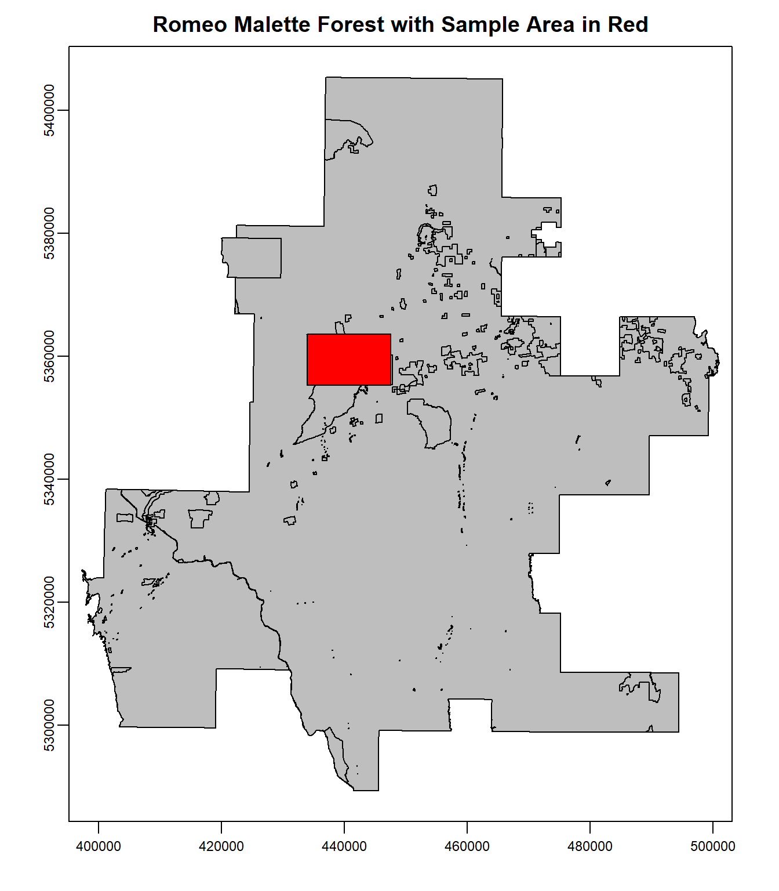
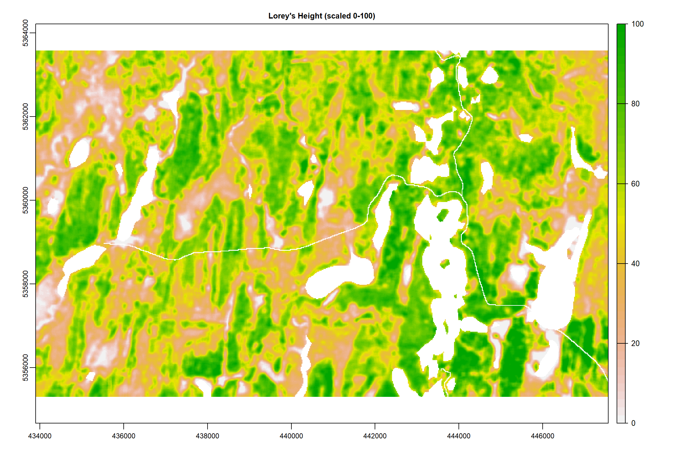
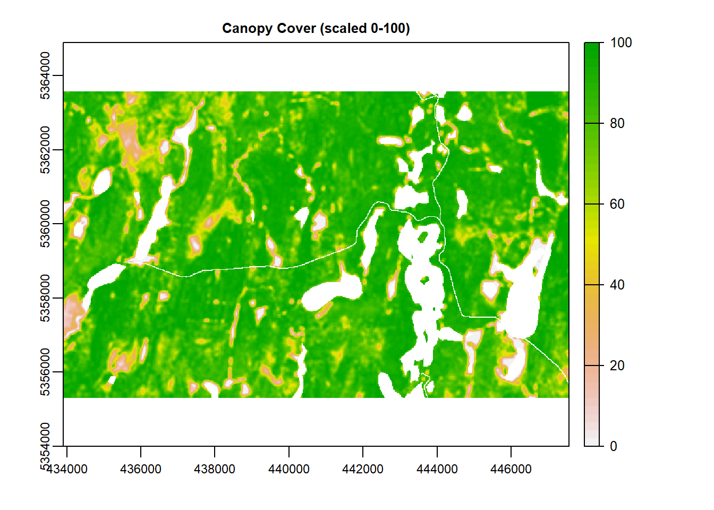
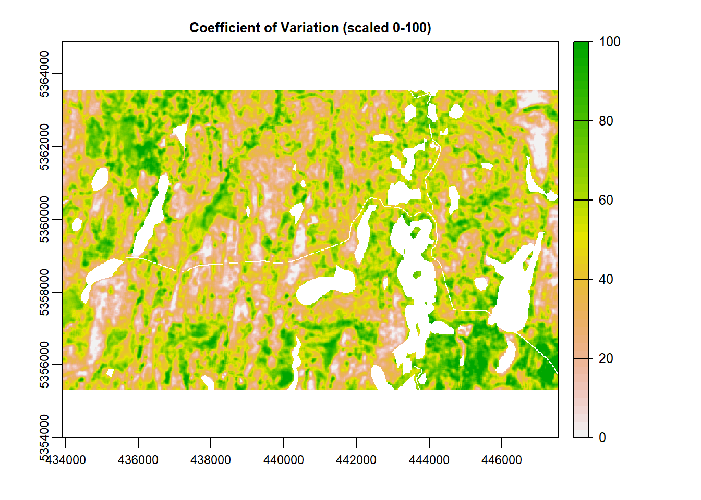
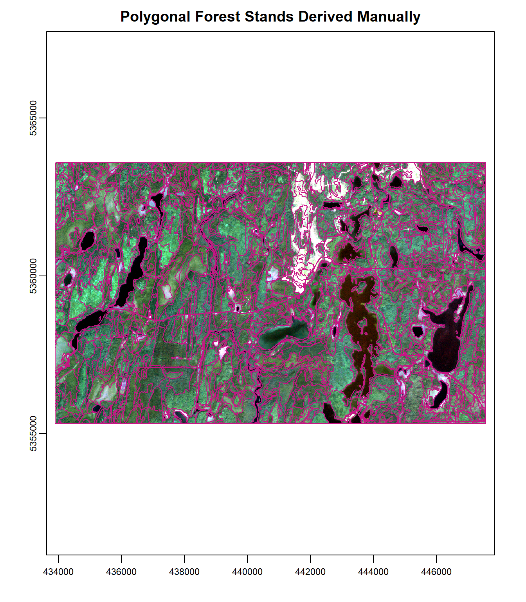
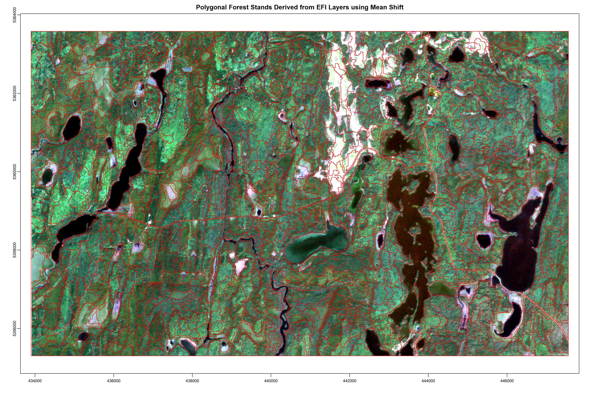

Segmentation Example
Intro
This page provides an example of the image segmentation approach used to derive polygonal forest stands from LiDAR-based raster data. The example data provided is from the Romeo Malette Forest (RMF).
First, a three band raster at 20 m spatial resolution is generated from Enhanced Forest Inventory (EFI) metrics. The three bands comprise Lorey’s height, canopy cover (% cover above 2m) and coefficient of variation (standard deviation of LiDAR return heights divided by mean). These bands are re-scaled to comprise values from 0-100, setting the minimum and maximum values to be the 1st and 99th percentile of data observations. Large roads and waterbodies are also masked to prevent them from being included in forest stand polygons.
Second, the mean shift algorithm is used to derive forest stand polygons from the input raster. The algorithm used is the LargeScaleMeanShift function from Orfeo ToolBox. Mean Shift is a robust and efficient segmentation algorithm that allows users to provide several parameters to ensure the output polygons meet certain specifications (input parameters described in above link). Although this example only runs the segmentation over a small part of the RMF, segmentation of the entire RMF only takes around 1.5 hrs on a single desktop machine.
Third, the output segmentation is compared to polygons derived from manual interpretation.
Create Multi-band Raster
# load packages
library(terra)
library(meanShiftR)
library(tidyverse)
# load file names of SPL rasters to stack
lor <- 'D:/ontario_inventory/romeo/RMF_EFI_layers/ABA layers SPL 2018/RMF_20m_T130cm_lor.tif'
cc <- 'D:/ontario_inventory/romeo/RMF_EFI_layers/SPL100 metrics/RMF_20m_T130cm_2m_cov.tif'
cv <- 'D:/ontario_inventory/romeo/RMF_EFI_layers/SPL100 metrics/RMF_20m_T130cm_cv.tif'
# stack rasters
spl <- rast(c(lor, cc, cv))
# load RMF shapefile along with sample to be used for example
# reproject to match raster
rmf <- vect('D:/ontario_inventory/romeo/RMF_EFI_layers/Land ownership/RMF_Ownership.shp') %>%
project(., spl)
rmf_samp <- vect('D:/ontario_inventory/romeo/RMF_Sample.shp') %>%
project(., spl)
# plot RMF overlaid with example
plot(rmf, col = 'grey',
main = 'Romeo Malette Forest with Sample Area in Red')
plot(rmf_samp, col = 'red', add = T)
# crop raster stack to sample area
spl <- crop(spl, rmf_samp)
# apply smoothing function on 5 cell square
spl[[1]] <- focal(spl[[1]], w=5, fun="mean")
spl[[2]] <- focal(spl[[2]], w=5, fun="mean")
spl[[3]] <- focal(spl[[3]], w=5, fun="mean")
# load roads and waterbodies
roads <- vect('D:/ontario_inventory/romeo/RMF_EFI_layers/Roads/RMF_roads.shp') %>%
project(., spl)
waterb <- vect('D:/ontario_inventory/romeo/RMF_EFI_layers/Lakes and rivers/RMF_waterbodies.shp') %>%
project(., spl)
# subset roads to only mask the main types used by interpreter
# RDTYPE = H, P, B
roads <- roads[roads$RDTYPE %in% c('H', 'P', 'B'),]
# mask road and water body pixels to NA
spl <- spl %>%
mask(., roads, inverse = T) %>%
mask(., waterb, inverse = T)
# if any band is missing values set all to NA
spl[is.na(spl[[1]])] <- NA
spl[is.na(spl[[2]])] <- NA
spl[is.na(spl[[3]])] <- NA
# create function to rescale values from 0 to 100 using 1 and 99 percentile
scale_100 <- function(x){
# calculate 1st and 99th percentile of input raster
perc <- values(x, mat=F) %>% quantile(., probs=c(0.01, 0.99), na.rm=T)
# rescale raster using 1st and 99th %
x <- (x-perc[1])/(perc[2] - perc[1]) * 100
#reset values below 0 and above 100
x[x < 0] <- 0
x[x > 100] <- 100
return(x)
}
# rescale rasters from 0 to 100
spl[[1]] <- scale_100(spl[[1]])
spl[[2]] <- scale_100(spl[[2]])
spl[[3]] <- scale_100(spl[[3]])
# plot raster layers
plot(spl[[1]], main = "Lorey's Height (scaled 0-100)")
plot(spl[[2]], main = "Canopy Cover (scaled 0-100)")
plot(spl[[3]], main = "Coefficient of Variation (scaled 0-100)")
# write raster to tif
writeRaster(spl, filename='D:/ontario_inventory/segmentation_ex/spl_stack.tif', overwrite=T)Run Mean Shift Segmentation
# set working directory where temp files will be output
setwd('D:/temp')
# create function to run mean shift
meanshift_otb <- function(otb_path = "", raster_in = "", out_path = "", name ="", spatialr = "10",
ranger = "10", minsize = "100", tilesizex = "500", tilesizey = "500",
outmode = "vector", cleanup = "true", ram = "256"){
# Set configuration
conf <- paste("-in", raster_in, "-spatialr", spatialr, "-ranger", ranger,
"-minsize", minsize, "-tilesizex", tilesizex, "-tilesizey", tilesizey,
"-mode", outmode, "-mode.vector.out", paste(out_path, "/", name, ".shp", sep=""),
"-cleanup", cleanup,"-ram", ram)
# apply function in command line
system(paste(otb_path, "/otbcli_LargeScaleMeanShift", " ", conf, sep=""), intern=T)
# save configuration for further use
write.table(x = conf,file = paste(out_path,"/",name,"_conf.txt",sep=""),row.names = F, col.names = F)
}
# run mean shift
meanshift_otb(otb_path = "C:/OTB/bin",
raster_in = 'D:/ontario_inventory/segmentation_ex/spl_stack.tif',
out_path = "D:/ontario_inventory/segmentation_ex",
name = "ms_10_10_100",
spatialr = "10",
ranger = "10",
minsize = "100",
ram = "1024")
# since mean shift segments missing values into polygons of 1 pixel, aggregate into single polygon
# segmented dataset
p <- vect('D:/ontario_inventory/segmentation_ex/ms_10_10_100.shp')
# subset by polygons that only have one pixel (NA) and polygons that have more
p_na <- p[p$nbPixels==1,]
p_real <- p[p$nbPixels>1,]
# dissolve polygons that only have 1 pixels
p2 <- aggregate(p_na, by='nbPixels')
# add back into single file
p3 <- rbind(p_real, p2)
# write to file
writeVector(p3, 'D:/ontario_inventory/segmentation_ex/ms_10_10_100_agg_na.shp', overwrite = T)Compare Datasets
# load base imagery
base <- rast('D:/ontario_inventory/romeo/RMF_Sample_Base.tif')
# load manually interpreted polygons and change to raster proj
man_poly <- vect('D:/ontario_inventory/romeo/RMF_EFI_layers/Polygons Inventory/RMF_PolygonForest.shp') %>%
project(., base) %>% crop(., base)
# load mean shift derived polygons and change to raster proj
ms_poly <- vect('D:/ontario_inventory/segmentation_ex/ms_10_10_100_agg_na.shp') %>%
project(., base) %>% crop(., base)
# plot base imagery with interpreter polygons
plot(man_poly, main = 'Polygonal Forest Stands Derived Manually')
plotRGB(base, stretch = 'lin', add = T)
plot(man_poly, border = 'mediumvioletred', add = T)
The above plot shows the manually derived forest stand polygons in part of the sample area, overlaid on recent true color imagery. Note the clean edges around water bodies, rivers/streams, and road features.
# plot base imagery with mean shift polygons
plot(ms_poly, main = 'Polygonal Forest Stands Derived from EFI Layers using Mean Shift')
plotRGB(base, stretch = 'lin', add = T)
plot(ms_poly, border = 'red2', add = T)
The above plot shows the mean shift derived forest stand polygons in part of the sample area. Note that the automated segmentation also has clean edges around water bodies and road features, since these features were masked in the first step. Rivers/streams were not masked due to no clear pattern dictating which features manual interpreters included/excluded. The workflow gives the user control over which features in the landscape should be excluded from the segmentation process. Also note that the polygons never reach the same maximum size as the polygons derived manually. The algorithm takes minimum polygon size as an input parameter, but in general does not cluster the landscape into as large polygons.
We will continue to tweak the segmentation algorithm until we are satisfied with the polygonal output. We have also begun working on the imputation step of the project and will provide further results as they become available.
We look forward to receiving feedback!